Tools used to create a path in Gravit Designer are located under the Pen Tool drop-down in the Tools Panel.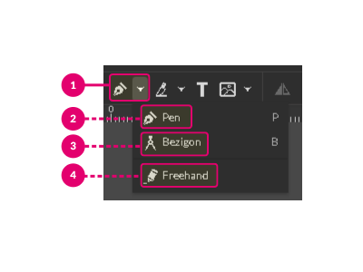
Pen Tool
Pen Tool (2) is an essential drawing tool in Gravit Designer that allows you to create precise lines/paths.
 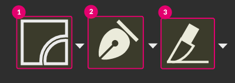
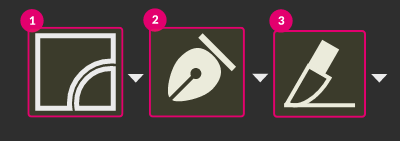
Its icon is located between Shape Tools (1) and Knife Tool (3) icons.
To draw a path with the Pen Tool follow these steps:
- Grab the Pen Tool from the Tool Bar or click on the keyboard
- Click to set your first anchor point, that defines the start of the path
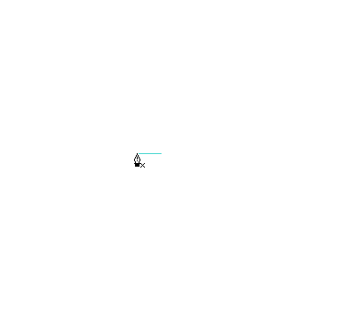 - A second click on the empty spot of the canvas would give you a path
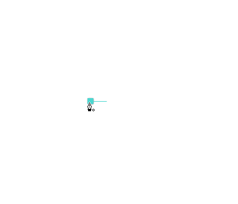 - Go on bringing up more anchor points, each of them will create a straight connecting line.

Hold key to constrain the angle of the line to 45 degrees.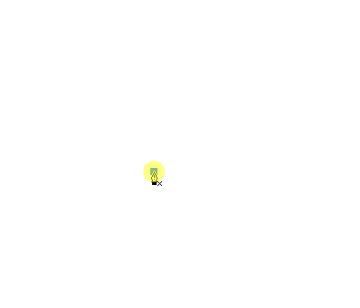
Create a curved line
Click, hold the Left Mouse Button key, and drag to introduce the bezier handles to the anchor point and make a curved line.
Connect (close) a path
To close the path come up to the first anchor point. Notice a small circle near the cursor when you hover over the anchor. That means you are about to close your path.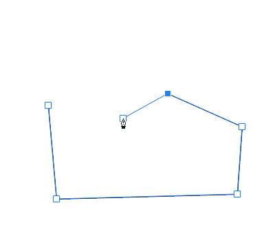
Delete an anchor point
If you want to delete an anchor point select the path with the Pointer Tool and hover over the anchor point with the Pen Tool.
Notice a small minus mark near the cursor, so you will delete this anchor point by clicking on it with the Left Mouse Button key.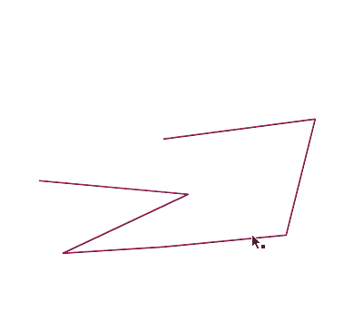
Add an anchor point
Select the path and come up to its outline with the Pen Tool. Notice the small plus mark near the cursor. Now you can add an anchor point to the path by clicking the Left Mouse Button key.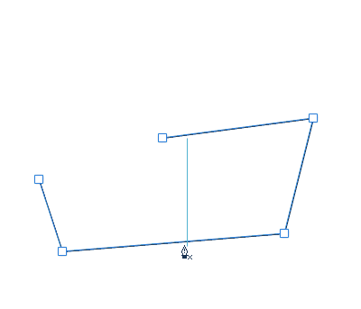
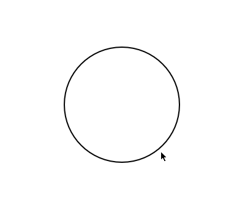
Bezigon Tool
The Bezigon Tool (3) is similar to the Pen Tool(2) in many ways:
- You can draw a path by placing anchor points on the canvas with the Left Mouse Button click.
- You can add/delete anchor points by clicking on the selected path
- Holding you can constrain the angle to 45 degrees.
The difference between the Pen and Bezigon Tool is subtle but indeed sublime. Oppose to the Pen Tool you cannot introduce the direction handles by holding Left Mouse Button key and dragging your mouse.
 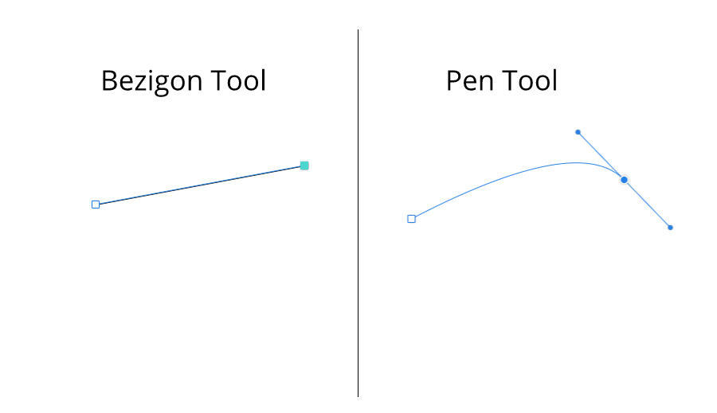
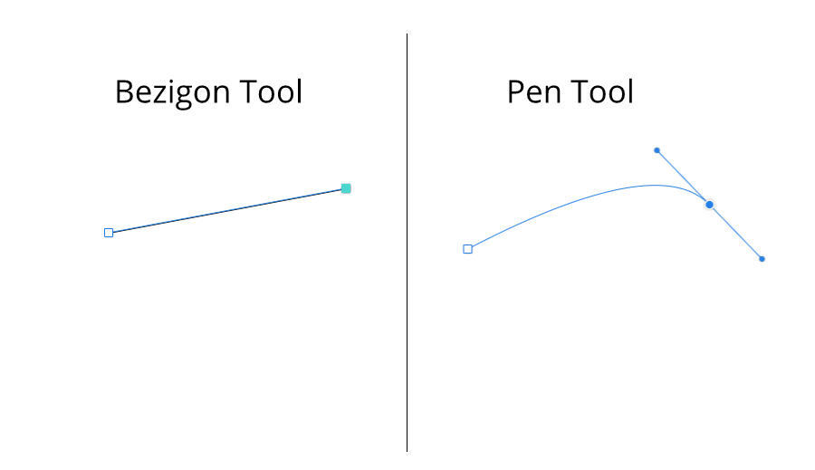
Instead, you can create a geometrically perfect curve by holding while placing an anchor.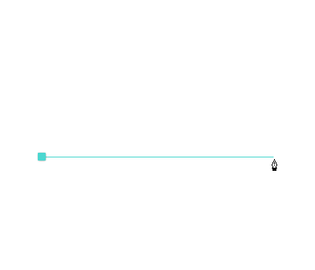
This would give you a special anchor point with a diamond shape appearance.
 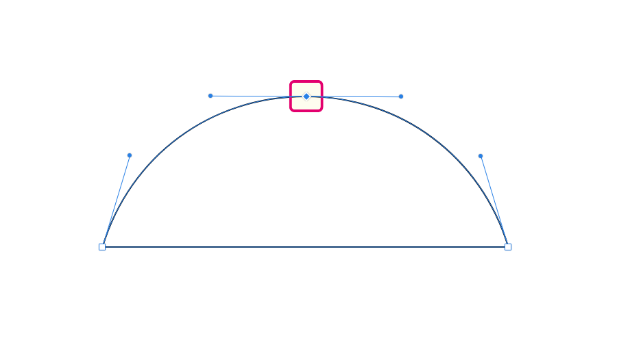
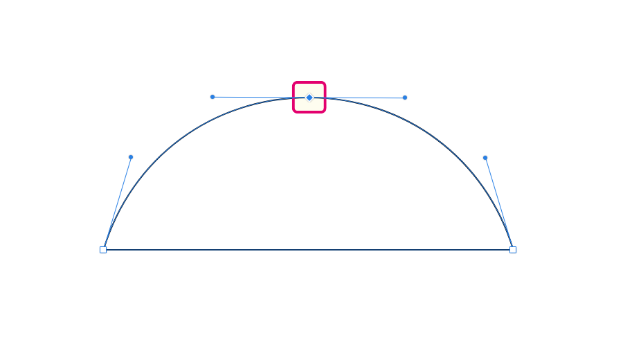
To delete this anchor point you need to click twice:
- First get rid of the direction handles
- Second to vanish the anchor point itself.


Freehand Tool
Use the Freehand Tool(4) to draw freeform paths as if you are drawing them on paper.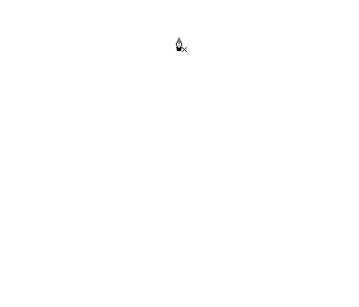
Hold the Left Mouse Button key and drag the mouse to produce a path.
Although you have no control over the position of the anchor points while you are drawing with the Freehand Tool, you can reposition them lately.
When using the Freehand tool, set a border in order to see the result while drawing.
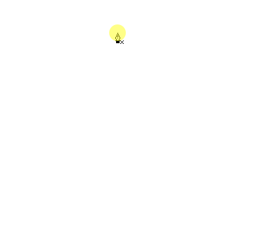
Hold key to temporarily switch to the Subselect Tool.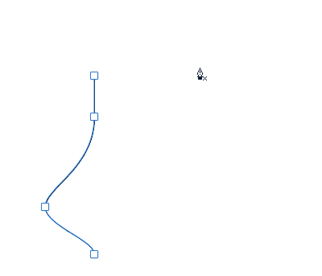